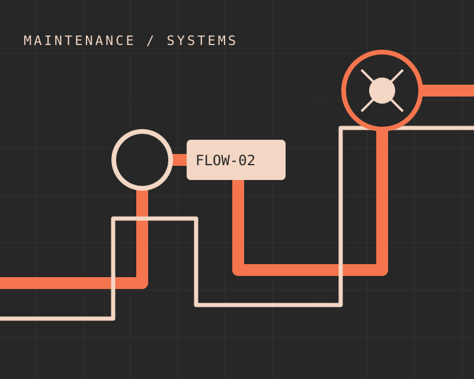

Comprendre l’installation
Échanger sur le fonctionnement des équipements, les difficultés observées et les contraintes de production.
Sécuriser le fonctionnement de vos équipements professionnels grâce à une intervention technique adaptée et un suivi régulier.
Étudier mon besoinLes équipements industriels nécessitent une attention régulière. Lorsqu’un outil de production présente un dysfonctionnement, une installation énergétique devient instable ou qu’une opération d’entretien doit être programmée, la réactivité et le dialogue technique font la différence.
Omnichauff propose des services de maintenance industrielle autour de Valenciennes. L’entreprise intervient sur des systèmes intelligents et automatisés et mentionne différents environnements professionnels, dont l’agroalimentaire, la pharmacie, l’énergie et l’automobile.
Une approche progressive et des explications claires pour préparer chaque intervention.
Échanger sur le fonctionnement des équipements, les difficultés observées et les contraintes de production.
Examiner les composants concernés et définir les actions de maintenance envisageables.
Établir un rythme d’intervention ou de maintenance planifiée selon le besoin présenté.


Les attentes ne sont pas identiques entre une activité agroalimentaire, un atelier de production ou un équipement énergétique. Comprendre votre contexte permet de mieux organiser l’intervention et de limiter les décisions improvisées.
Omnichauff met en avant la transparence de ses échanges et la possibilité de contrats de maintenance annuelle. Pour étudier un besoin de maintenance, exposez à l’équipe la nature de votre équipement et les opérations recherchées.
Quelques réponses pour préparer votre échange avec l’équipe Omnichauff. Pour un cas particulier, une prise de contact reste nécessaire.
Oui. Le site d’Omnichauff mentionne des contrats annuels de maintenance permettant d’organiser des interventions régulières.
Oui, Omnichauff indique avoir une expérience sur les systèmes industriels intelligents et automatisés.
L’entreprise cite notamment l’agroalimentaire, la pharmacie, l’énergie et l’automobile.
Omnichauff est implantée au 521 Rue de la Broderie, 59235 Bersée. L’entreprise intervient notamment dans le secteur de Valenciennes et autour de Douai. Contactez l’équipe pour étudier la faisabilité de votre projet selon votre localisation.
Contacter Omnichauff ↗Parlons de votre installation et trouvons la bonne suite à donner à votre demande.